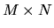
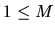
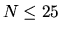

| Problem A: The Monocycle |
A monocycle is a cycle that runs on one wheel and the one we will be considering is a bit more special. It has a solid wheel colored with five different colors as shown in the figure:
The colored segments make equal angles (72o) at the center. A monocyclist rides this cycle on an  grid of square tiles. The tiles have such size that moving forward from the center of one tile to that of the next one makes the wheel rotate exactly 72o around its own center. The effect is shown in the above figure. When the wheel is at the center of square 1, the midpoint of the periphery of its blue segment is in touch with the ground. But when the wheel moves forward to the center of the next square (square 2) the midpoint of its white segment touches the ground.
Some of the squares of the grid are blocked and hence the cyclist cannot move to them. The cyclist starts from some square and tries to move to a target square in minimum amount of time. From any square either he moves forward to the next square or he remains in the same square but turns 90o left or right. Each of these actions requires exactly 1 second to execute. He always starts his ride facing north and with the midpoint of the green segment of his wheel touching the ground. In the target square, too, the green segment must be touching the ground but he does not care about the direction he will be facing.
Before he starts his ride, please help him find out whether the destination is reachable and if so the minimum amount of time he will require to reach it.
The input may contain multiple test cases.
The first line of each test case contains two integers M and N (, ) giving the dimensions of the grid. Then follows the description of the grid in M lines of N characters each. The character `#' will indicate a blocked square, all other squares are free. The starting location of the cyclist is marked by `S' and the target is marked by `T'. The input terminates with two zeros for M and N.
For each test case in the input first print the test case number on a separate line as shown in the sample output. If the target location can be reached by the cyclist print the minimum amount of time (in seconds) required to reach it exactly in the format shown in the sample output, otherwise, print ``destination not reachable".
Print a blank line between two successive test cases.
1 3 S#T 10 10 #S.......# #..#.##.## #.##.##.## .#....##.# ##.##..#.# #..#.##... #......##. ..##.##... #.###...#. #.....###T 0 0
Case #1 destination not reachable Case #2 minimum time = 49 sec